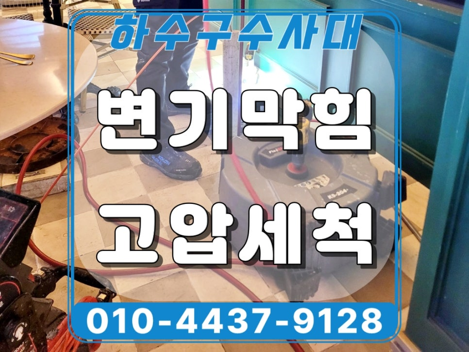
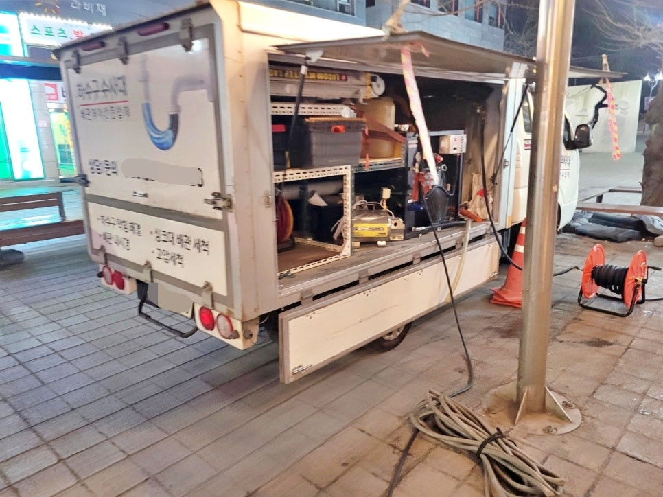
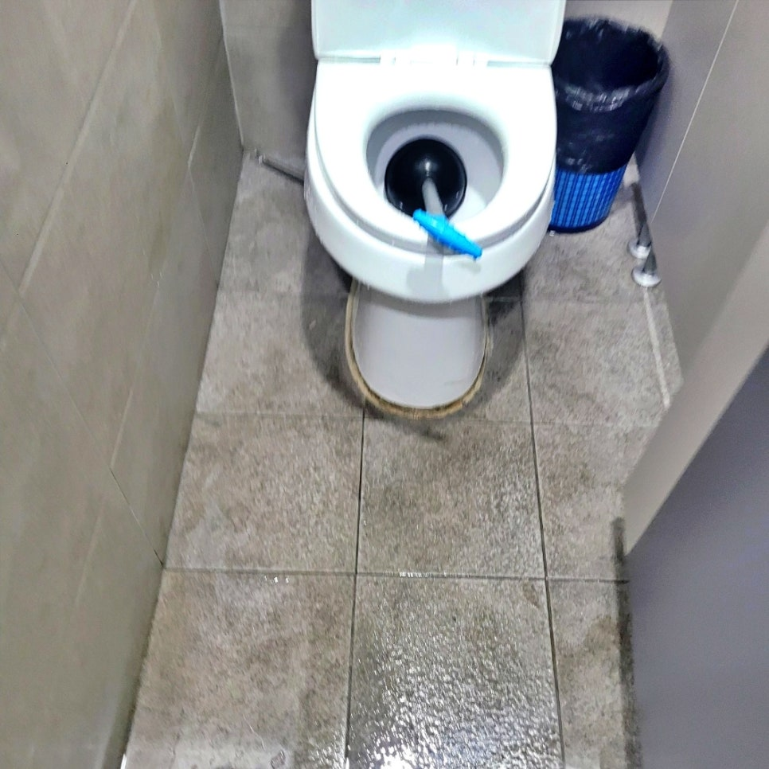
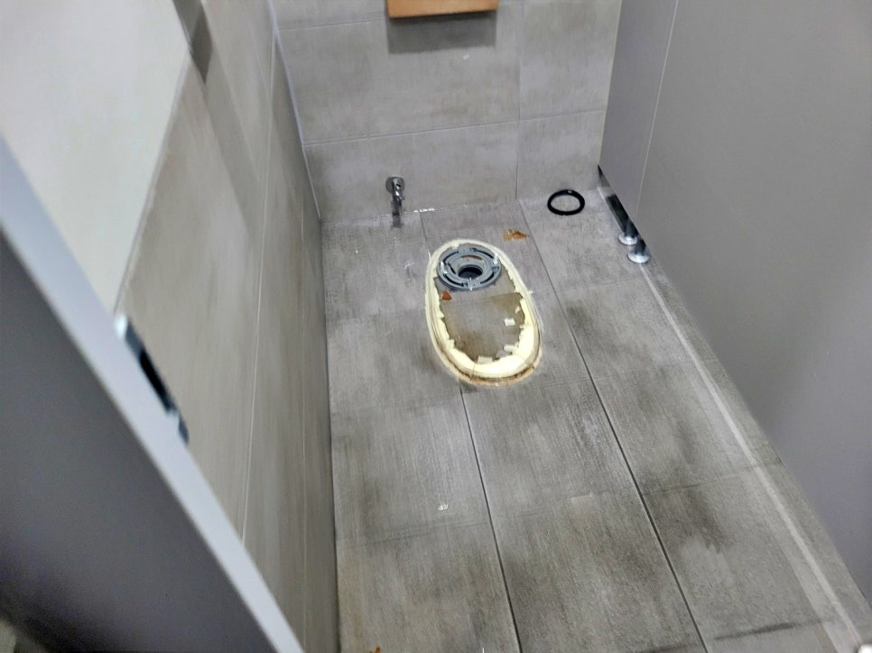
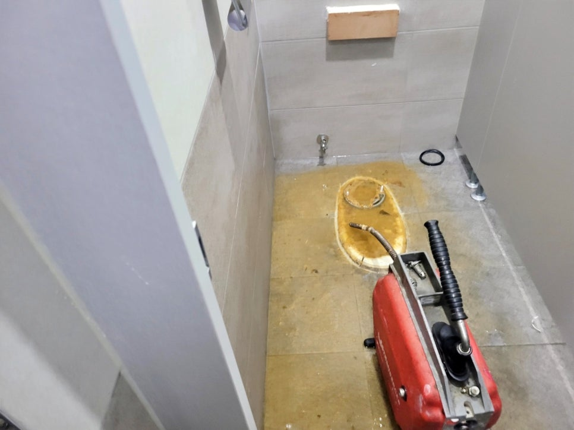
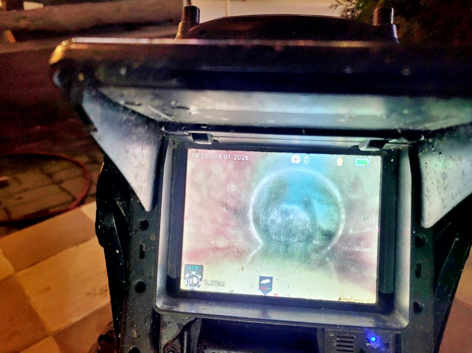
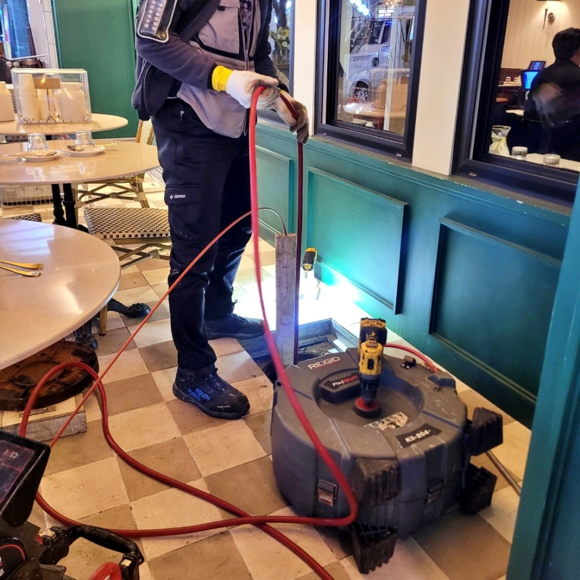

🏠 화성시 동탄 변기막힘 역류 원인 물티슈 고압세척으로 해결
화성 변기막힘 전문 시공 후기

📋 작업 개요
- 위치: 화성
- 서비스 유형: 변기막힘, 하수구막힘, 배관막힘, 맨홀막힘, 역류해결, 뚫는업체, 배관청소, 고압세척
- 작업 일시: 2026. 1. 24. 15:45
- 업체명: 하수구수사대 (010-5615-2118)
🔍 문제 상황
화성 동탄 변기막힘 역류 원인
물티슈 고압세척 청소 작업으로
완벽하게 해결해 드렸어요.!!!
안녕하세요?
화성시 동탄 변기막힘 역류 배관청소
전문업체 하수구수사대 인사드립니다.
오늘 저희가 다녀온 시공 후기는
화성 동탄 상가 매장에서 발생한
변기막힘 역류를 해결하기 위해
출동한 사례입니다.
하수구수사대 고압세척 작업 차량
화성시 동탄 변기막힘 역류 문제는
매장을 운영 중인 시간에 변기뿐만
아니라 소변기까지 물이 내려가지
않고 역류해 직원들이 긴급 조치를
했지만 해결이 안 돼 저희가 출동하게
됐는데요.
이번 현장은 왜 이러한 역류 문제가
발생했을까요?
지금 바로 그 원인과 해결 과정을
상세히 소개하겠습니다.
오늘의 시공후기 index
1. 동탄 변기막힘 역류 원인은 물티슈
2. 막힘원인 물티슈 고압세척 제거작업

🔎 원인 분석
💡 전문가 진단: 화성 동탄 변기막힘 역류 원인물티슈 고압세척 청소 작업으로완벽하게 해결해 드렸어요.!!!
3. 오늘의 시공 후기를 마치며
현장에 도착해 보니 화면과 같이
직원들이 사용한 일반 관통기가
그대로 놓여 있었는데요.
변기 탈거 후 모습
화성시 동탄 변기막힘 문제는 단순한
방법으로는 해결이 어렵다는 판단이
들어서 즉시 변기 탈거 후 스프링
작업을 진행했습니다.
스프링 작업 중 역류하는 장면
하지만 화면과 같이 스프링 작업
중에도 통수는 이루어지지 않고
오히려 소변기에서도 역류 현상이
반복됐는데요.
내시경 카메라로 쌓인 기름층 확인됨
화성시 동탄 변기막힘 정확한 원인을
파악하기 위해 매장 중앙에 위치한
오수받이를 개방하고 내시경 카메라를
투입해 보니 예상치 못한 많은 기름이
오수관에 쌓여 있는 것이 포착됐는데요.
얼마 전, 다른 업체가 외부 맨홀에서
고압세척을 진행하던 중 기름들이
오수관 내부로 역류하여 쌓였었고
내방객들이 사용한 물티슈가 그곳에

🔧 작업 과정
걸리면서 결국 변기막힘 역류 현상이
발생한 것이었죠.
먼저 동탄 화장실 변기막힘 원인인
물티슈는 샤프트 노즐로 제거했으며
남아 있는 물티슈와 내벽의 기름들은
고압세척으로 청소를 시작했는데요.
고압세척 시공 장면
잠시 후
배관 내벽에 남아 있던 기름들이
고압세척으로 제거되면서 쏟아져
내려오기 시작하며 외부 출수구로
연결된 구간이 먼저 뚫렸습니다.
그리고 이어서
화성시 동탄 변기막힘 역류가 발생한
화장실로 이동해 오수받이를 향해
고압세척을 진행해 남아있던 기름과
물티슈까지 깨끗하게 제거했는데요.
위 화면과 같이
당시 고압세척 작업에서 막힌 곳이
뚫리면서 역류한 흔적들을 보시면
오수관을 막고 있던 기름과 물티슈가
얼마나 많았는지 가늠할 수 있습니다.
참고로
이번 변기막힘 역류 원인인 물티슈는
물에 녹지 않는 재질로 변기에 버릴
경우 시간이 지날수록 내부에 쌓이고
기름때와 엉키면 이번 현장과 같이
문제가 발생하게 되는 것인데요.
여러 번의 고압세척 작업으로 막힌 곳을
모두 뚫은 다음에는 고압 물 청소로
화장실 내부를 깨끗이 정리해 드렸으며
철거했던 소변기와 양변기까지 재설치
복구해 드리고 마무리했습니다.
오늘 소개한
화성시 동탄 변기막힘 역류 사례는
단순한 이물질 하나로 발생하지
않는다는 점과 다중 이용 시설일수록
정기적인 관리가 얼마나 중요한지를
분명히 보여줬는데요.


✅ 작업 완료
물티슈는 꼭 휴지통이나 별도의
장소로 분리배출하시기 바라며
혹시나 이번 현장과 같이 막힘이나
역류가 발생했다면 배관청소 업체인
하수구수사대를 불러 주십시오.
지금까지
'화성시 동탄 변기막힘 역류 원인
물티슈 고압세척으로 해결' 편을
정독해 주셔서 감사합니다.
#화성동탄화장실변기막힘 #화성시동탄변기막힘 #화성시동탄화장실막힘역류 #화성동탄변기배관막힘 #화성동탄변기배관청소업체 #동탄변기막힘청소업체 #동탄변기배관막힘청소 #동탄소변기막힘




⚠️ 하수구 배관 막힘 예방 및 관리 가이드
- ✅ 머리카락, 비닐, 물티슈 등 물에 분해되지 않는 이물질은 하수구 유입을 절대 금지해 주세요.
- ✅ 하수구 거름망을 씌우고 모여진 이물질은 주기적으로 쓰레기통에 바로 비워주셔야 합니다.
- ✅ 배관 노후가 심할 경우 이물질이 더 쉽게 걸리므로 주기적인 배관 세척(고압세척 등)을 권장합니다.
- ✅ 작업 후 1년 이내 재발 시 하수구수사대에서 무상 A/S 보증 서비스를 제공합니다.
💡 핵심 정리
- 확실한 장비 작업(내시경 점검 및 샤프트 스케일링)으로 원인을 뿌리 뽑습니다.
- 작업 후 1년 이내에 동일한 부위 재발 시 100% 무상 A/S 서비스를 보장합니다.
- 서울 · 경기 · 인천 전 지역에 24시간 언제든 긴급 출동할 수 있도록 항시 대기 중입니다.
❓ 자주 묻는 질문 (FAQ)
🚨 화성 변기막힘 문제로 고민이신가요?
정확한 원인 진단과 확실한 시공으로 재발 없는 해결을 약속드립니다.
24시간 긴급 출동 | 서울 · 경기 · 인천 전지역 | 1년 내 재발 시 무상 A/S